1ความสามารถ
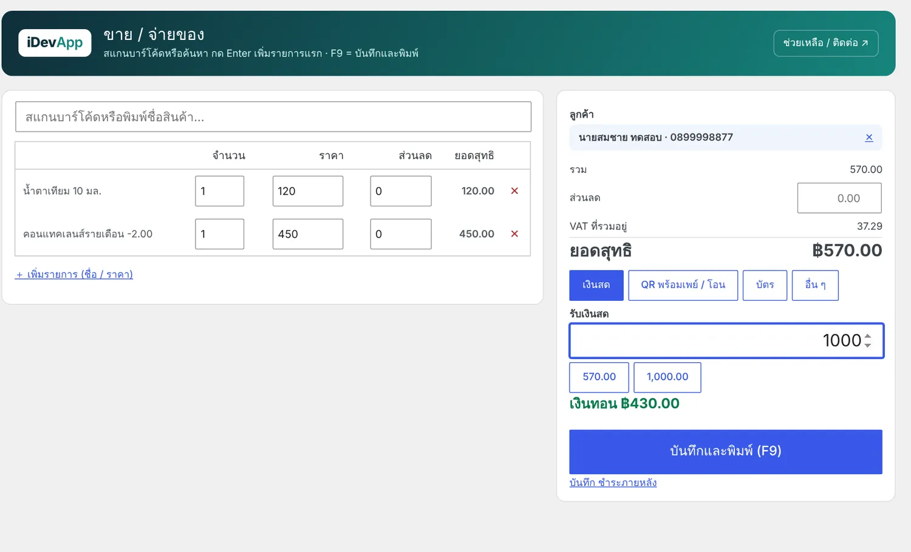
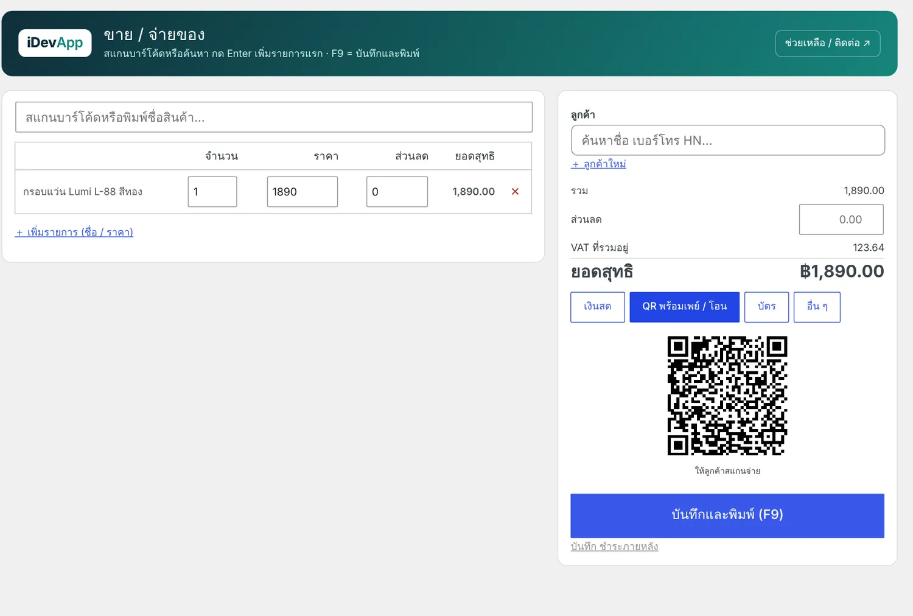
- สต็อก แยก Lot และวันหมดอายุ ตัดสต็อกตัวที่หมดอายุก่อนออกก่อน (FEFO) เตือนของใกล้หมดและใกล้หมดอายุ ตรวจนับ ตัดชำรุด คืนผู้ขาย นำเข้าจาก Excel (CSV)
- ขาย / จ่ายของ ใช้เครื่องสแกนบาร์โค้ดได้ทันที ส่วนลดรายการและท้ายบิล VAT (ไม่จด / รวมใน / บวกเพิ่ม) เงินสด QR พร้อมเพย์ บัตร หรือค้างชำระ
- งานสั่งทำ เช่น ตัดแว่น: ค่าสายตา SPH CYL AXIS ADD PRISM BASE VA และ PD เลือกกรอบจากสต็อกและเลนส์ มัดจำ กำหนดเสร็จ
- สถานะงาน: รับงาน → สั่งของ/เลนส์ → กำลังดำเนินการ → พร้อมรับ → รับของแล้ว เมื่อพร้อมรับ ส่งอีเมลอัตโนมัติ และมีปุ่มส่งข้อความทาง LINE / SMS / WhatsApp
- นัดรับของ ลูกค้าสแกน QR บนใบรับงาน ดูสถานะ ยอดคงเหลือ และเลือกเวลามารับเอง (กำหนดวัน เวลา และจำนวนต่อช่วงได้ ข้ามวันหยุดอัตโนมัติ)
- พิมพ์ ใบเสร็จ ใบรับเงิน (มัดจำ) และใบรับงาน: เครื่องพิมพ์ใบเสร็จ 80 มม. · A5 · A4 · ดอทเมทริกซ์กระดาษต่อเนื่อง (กำหนดขนาดเป็นนิ้ว)
- ลูกค้า พร้อมประวัติค่าสายตาและบิล ค่าสายตา ที่อยู่ และบันทึกถูก เข้ารหัส
- รายงาน ยอดรับเงินแยกตามช่องทาง สินค้าขายดี มูลค่าสต็อก Lot ใกล้หมดอายุ ส่งออก CSV
- สิทธิ์ผู้ใช้ 2 ระดับ: พนักงานร้าน และ ผู้จัดการร้าน (แก้ราคา ตรวจนับ ยกเลิกบิล ดูรายงาน)
เลือก ประเภทกิจการ ได้ 4 แบบ: คลินิกตา/ร้านแว่น · คลินิก · ร้านขายยา · ร้านค้า/งานบริการ ระบบจะปรับประเภทงาน ช่องข้อมูลสินค้า (เช่น ยี่ห้อ/รุ่น/สี/ขนาดกรอบ หรือ ชื่อสามัญทางยา/ความแรง/ประเภทยา อย.) และแบบฟอร์มค่าสายตาให้เอง
2เริ่มต้นใช้งาน
- ตั้งค่าร้าน
ร้าน › ตั้งค่า ใส่ชื่อร้าน ที่อยู่ เลขผู้เสียภาษี โลโก้ เลือกประเภทกิจการ VAT และ พร้อมเพย์ (เบอร์มือถือหรือเลข 13 หลัก) แล้วสแกน QR ทดสอบ 1 บาทเพื่อตรวจชื่อบัญชี
- ตั้งค่าการพิมพ์
แท็บ การพิมพ์ เลือกรูปแบบใบเสร็จและใบรับงาน ถ้าใช้ดอทเมทริกซ์ ใส่ขนาดกระดาษต่อเนื่อง เช่น 9 × 5.5 นิ้ว และตั้งขนาดเดียวกันในไดรเวอร์เครื่องพิมพ์
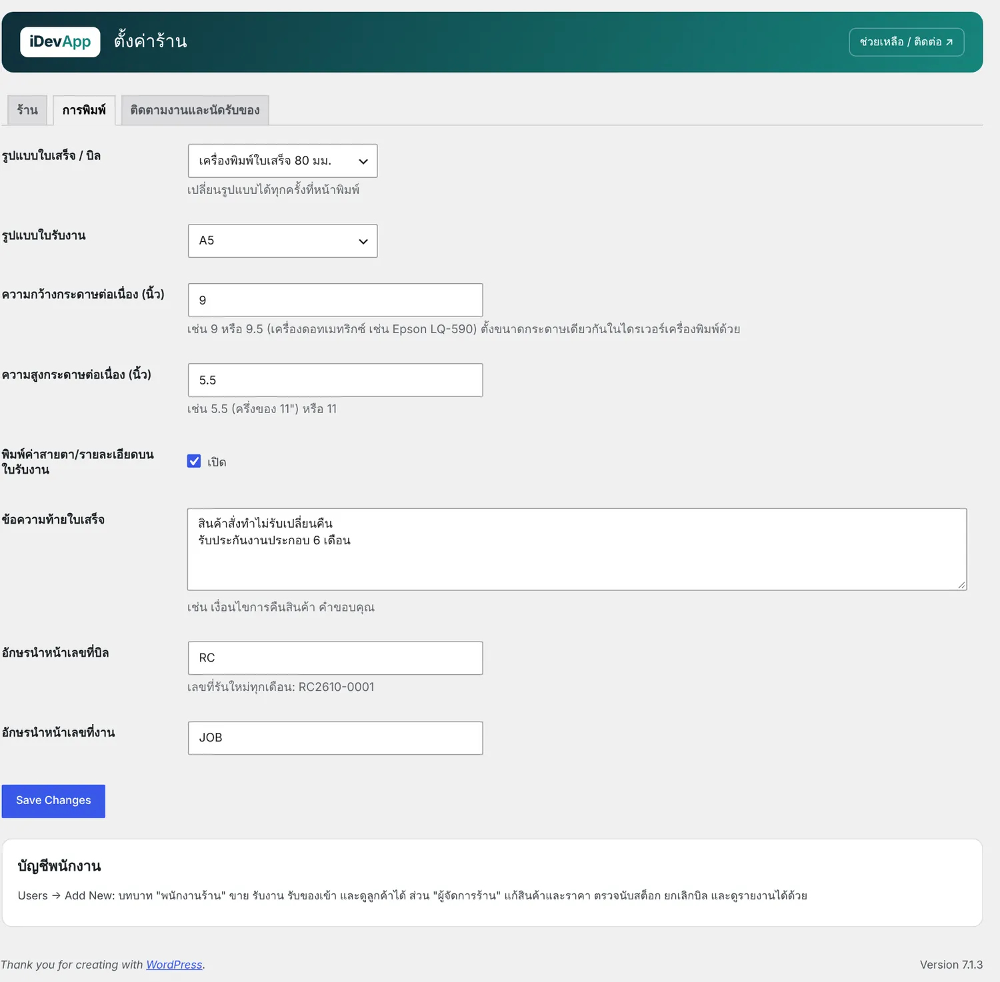
แท็บการพิมพ์ - เพิ่มสินค้า
ร้าน › สต็อก กด เพิ่มสินค้า ทีละรายการ หรือ นำเข้า CSV จาก Excel สินค้าที่สั่งตามงาน (เช่น เลนส์จากแล็บ) หรือค่าบริการ ให้เลือกประเภท บริการ / สั่งตามงาน จะไม่ตัดสต็อก
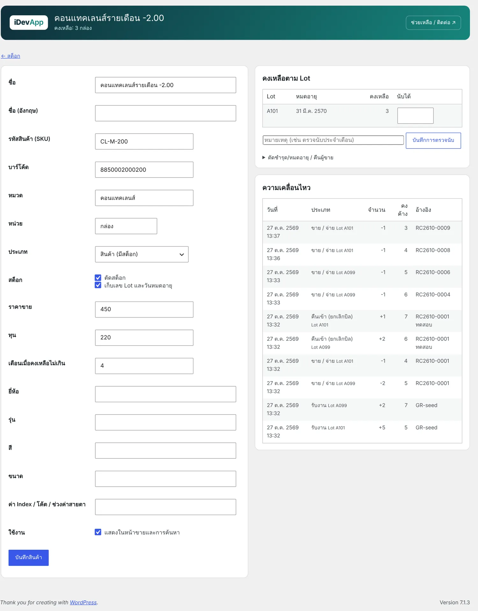
หน้าสินค้า: คงเหลือตาม Lot ตรวจนับ และความเคลื่อนไหว - รับของเข้า
รับของเข้า สแกนหรือค้นหาสินค้า ใส่จำนวน Lot วันหมดอายุ และทุน ระบบออกเลขที่ใบรับ (GR) ให้
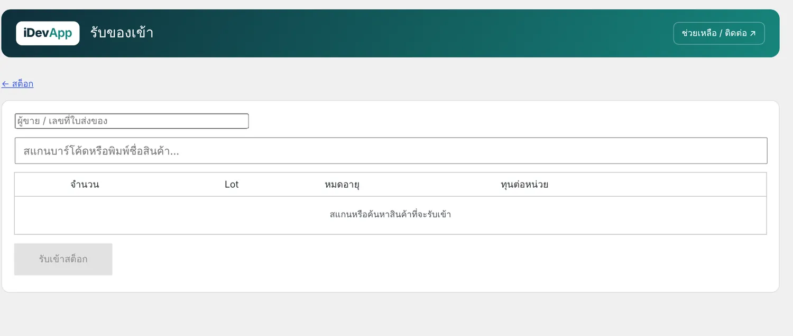
รับของเข้า - สร้างหน้าติดตามงาน
สร้างหน้า เช่น "ติดตามงานสั่งทำ" ใส่บล็อก ติดตามงานสั่งทำ หรือ
[idev_job_status]แล้วเลือกหน้านี้ที่ ตั้งค่า › ติดตามงานและนัดรับของ พร้อมกำหนดวันและเวลารับของ - สร้างบัญชีพนักงาน
Users › Add New เลือกบทบาท พนักงานร้าน หรือ ผู้จัดการร้าน
3งานสั่งทำและนัดรับของ (เช่น ตัดแว่น)
- รับงาน
ร้าน › งานสั่งทำ › รับงานใหม่ เลือกลูกค้า (หรือเพิ่มใหม่) กรอกค่าสายตา เพิ่มกรอบและเลนส์ ใส่มัดจำ แล้วกด บันทึกและพิมพ์ใบรับงาน
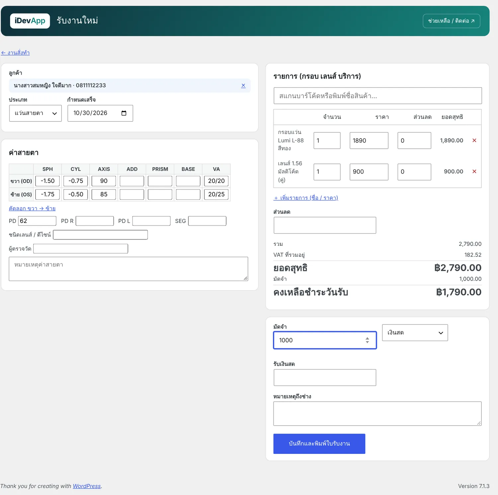
ฟอร์มรับงานใหม่ - ให้ใบรับงานลูกค้า
ใบรับงานมีค่าสายตา รายการ มัดจำ ยอดคงเหลือ และ QR สำหรับติดตามงาน
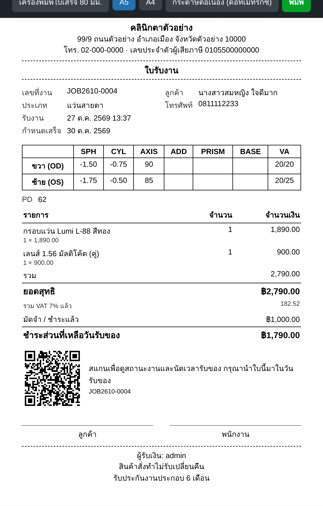
ใบรับงาน A5 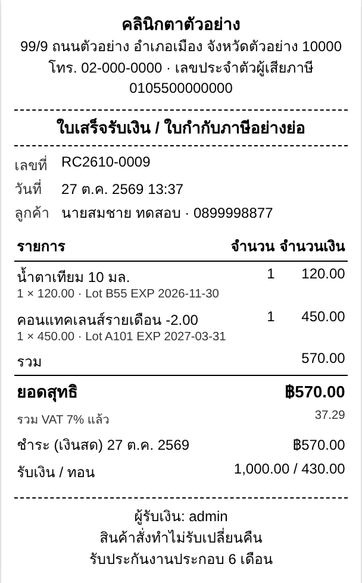
ใบเสร็จ 80 มม. - อัปเดตสถานะ
กด → สั่งของ/สั่งเลนส์แล้ว → กำลังดำเนินการ → พร้อมรับ เมื่อพร้อมรับ ระบบส่งอีเมล และมีปุ่มส่งข้อความทาง LINE / SMS / WhatsApp
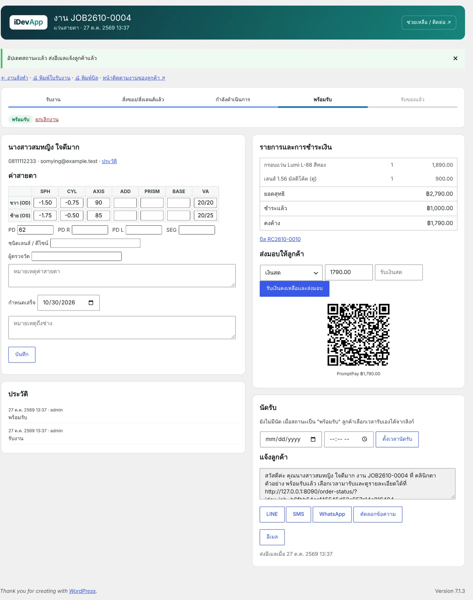
หน้างาน: สถานะ ค่าสายตา การชำระเงิน นัดรับ และข้อความแจ้งลูกค้า - ลูกค้านัดเวลารับ
ลูกค้าสแกน QR หรือกดลิงก์ในข้อความ เห็นสถานะและยอดคงเหลือ แล้วเลือกวันและเวลามารับเอง เจ้าหน้าที่เห็นในหน้า วันนี้ › นัดรับวันนี้
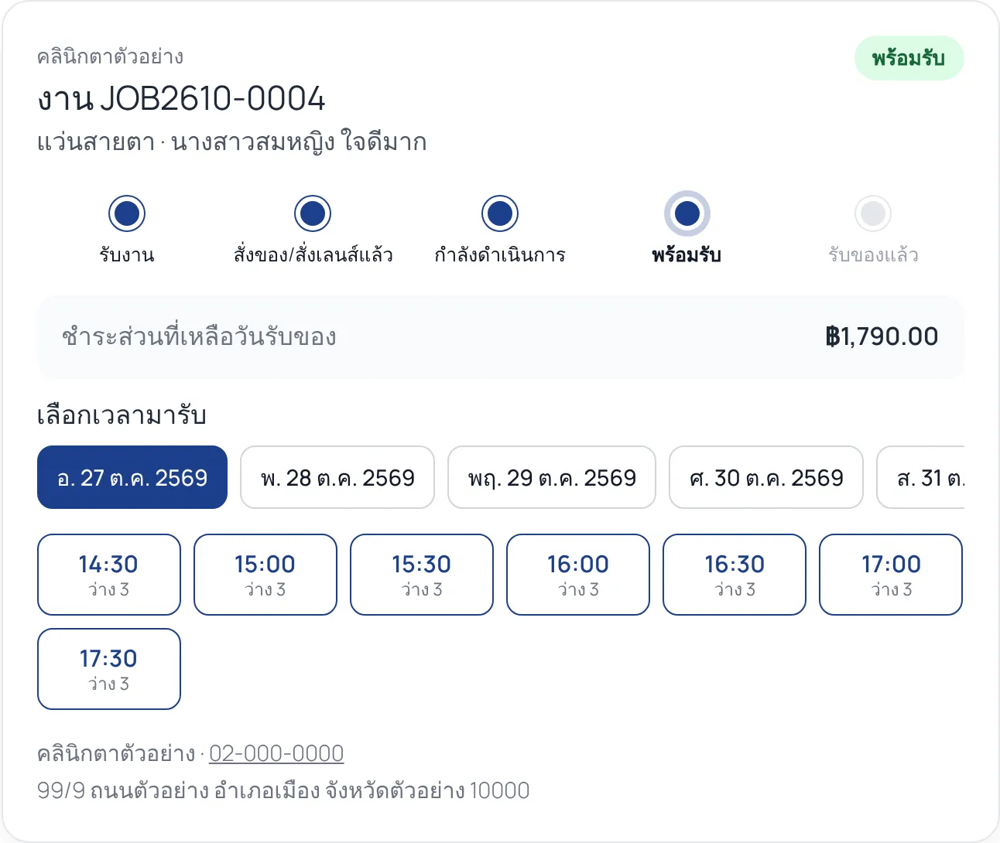
หน้าติดตามงานของลูกค้า 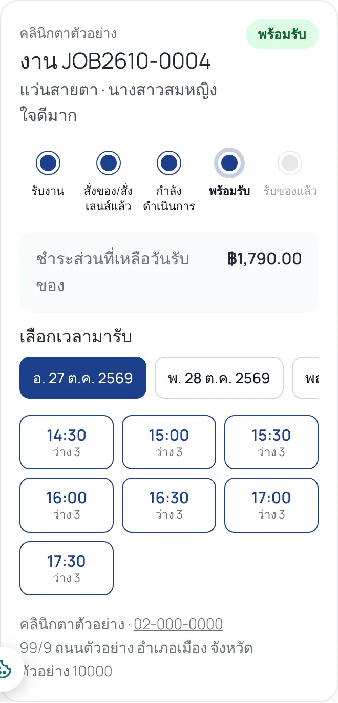
บนมือถือ - ส่งมอบ
วันรับของ เปิดงานแล้วกด รับเงินคงเหลือและส่งมอบ ระบบออกใบเสร็จและปิดงาน
4เครื่องพิมพ์ที่รองรับ
| รูปแบบ | เหมาะกับ |
|---|---|
| เครื่องพิมพ์ใบเสร็จ 80 มม. | หน้าร้าน ร้านขายยา (thermal) |
| A5 / A4 | ใบรับงานแว่น ใบเสร็จแบบเต็ม เครื่องเลเซอร์/อิงก์เจ็ท |
| กระดาษต่อเนื่อง | ดอทเมทริกซ์ เช่น Epson LQ-590 พิมพ์สำเนาด้วยกระดาษคาร์บอน กำหนดกว้าง × สูง เป็นนิ้วในตั้งค่า |
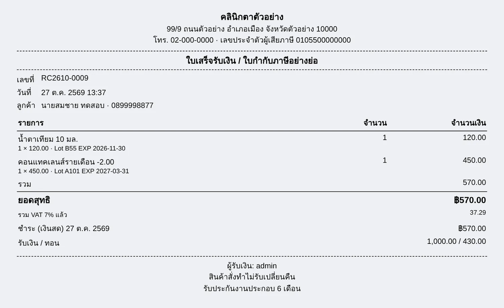
หน้าพิมพ์มีปุ่มสลับรูปแบบด้านบน พิมพ์ผ่านหน้าต่างพิมพ์ของเบราว์เซอร์ จึงใช้ได้กับทุกเครื่องพิมพ์ที่ติดตั้งในคอมพิวเตอร์ ตั้งขนาดกระดาษและขอบในหน้าต่างพิมพ์ให้ตรงกับเครื่อง (แนะนำปิด "Headers and footers")
5ร้านขายยา: ฉลากยาและบัญชี ขย.
ตั้ง ประเภทกิจการ = ร้านขายยา แล้วหน้าสินค้าจะมีช่อง ข้อมูลยาและฉลาก: ชื่อสามัญ ความแรง รูปแบบยา ประเภทยา (อย.) ติ๊ก รายงาน ขย.13 เลขทะเบียน ผู้ผลิต/ผู้นำเข้า ขนาดบรรจุ วิธีใช้เริ่มต้น ข้อบ่งใช้ และคำเตือน (คลินิกใช้ฉลากยาได้เช่นกัน)
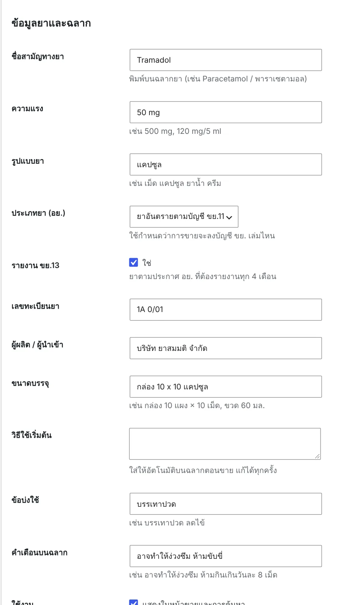
| ประเภทยา | ลงบัญชี |
|---|---|
| ยาสามัญประจำบ้าน / ยาอันตราย | ขย.9 (ซื้อ) · ขย.12 เมื่อขายตามใบสั่งยา |
| ยาอันตรายตามบัญชี ขย.11 (เช่น ทรามาดอล เด็กซ์โตรเมทอร์แฟน ยาน้ำแก้แพ้) | ขย.11 แยกแผ่นตามชื่อยาและ Lot · ต้องใส่ชื่อผู้ซื้อ |
| ยาควบคุมพิเศษ | ขย.10 แยกแผ่นตามชื่อยาและ Lot · ต้องใส่ชื่อผู้ซื้อ |
| ติ๊ก "รายงาน ขย.13" | ขย.13 ยอดยกมา รับเข้า ขาย คงเหลือ รอบ ม.ค.–เม.ย. / พ.ค.–ส.ค. / ก.ย.–ธ.ค. |
- ขายและเขียนวิธีใช้
ที่หน้าขาย ใต้ชื่อยาจะมีป้ายประเภทยาและ 💊 วิธีใช้ (ดึงจากวิธีใช้เริ่มต้น) กดเพื่อแก้ หรือใช้ตัวช่วย: รับประทาน/ทา/หยอดตา… ครั้งละ… หน่วย วันละ… ครั้ง ก่อน/หลังอาหาร เช้า กลางวัน เย็น ก่อนนอน แล้วกด ใส่ข้อความ
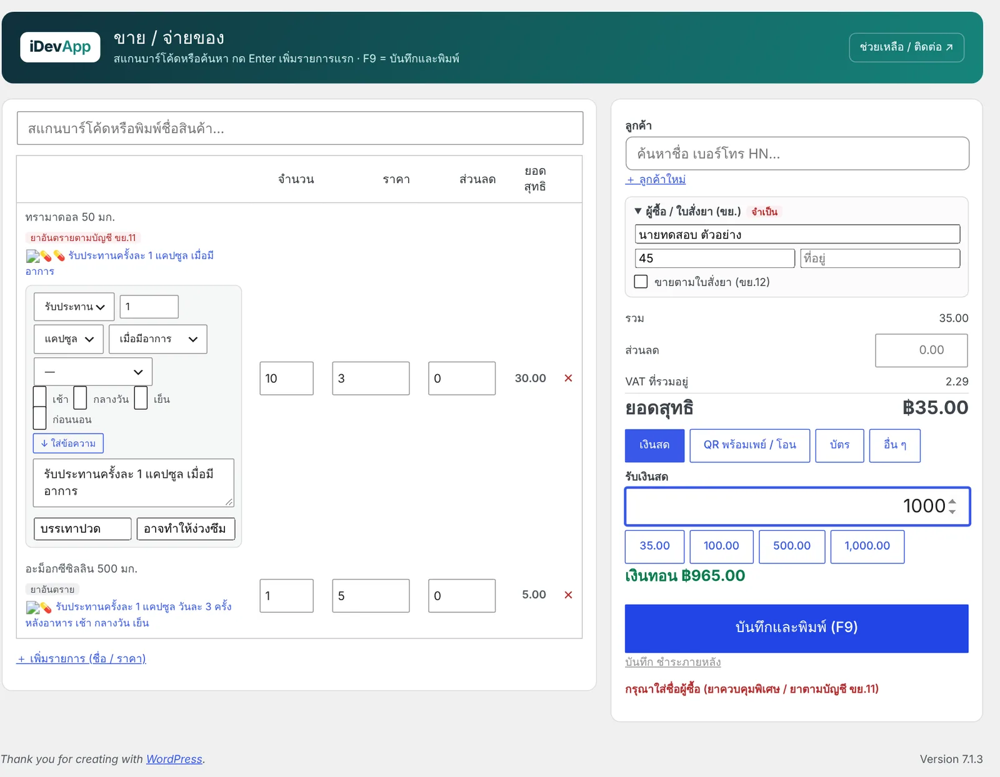
หน้าขายของร้านยา: วิธีใช้ต่อรายการ และกล่องผู้ซื้อ / ใบสั่งยา - ข้อมูลผู้ซื้อ / ใบสั่งยา
ถ้ามียาควบคุมพิเศษหรือยาตามบัญชี ขย.11 ระบบบังคับใส่ ชื่อผู้ซื้อ (ใส่อายุ ที่อยู่ได้) ถ้าขายตามใบสั่งยา ติ๊ก ขายตามใบสั่งยา (ขย.12) แล้วใส่ชื่อและสถานที่ทำงานของผู้สั่งยา ข้อมูลนี้ถูก เข้ารหัส ในฐานข้อมูล
- พิมพ์ฉลากยา
บันทึกบิลแล้วกด พิมพ์ฉลากยา ได้ 1 ฉลากต่อรายการ มีชื่อร้านและเบอร์โทร ชื่อผู้ป่วย วันที่จ่าย ชื่อสามัญ ความแรง รูปแบบ จำนวน วิธีใช้ ข้อบ่งใช้ คำเตือน วันหมดอายุจาก Lot ที่ตัดจริง และชื่อเภสัชกร ตามหัวข้อในประกาศกระทรวงสาธารณสุขเรื่องฉลากยา พ.ศ. 2565 ใช้ได้กับ สติกเกอร์ฉลาก (ตั้งขนาดเป็นมม.) หรือเครื่องพิมพ์ใบเสร็จ 80 มม.
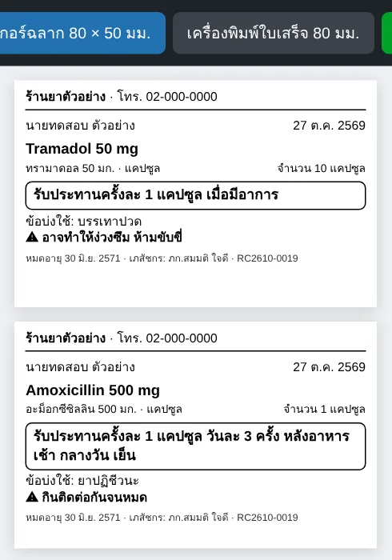
ฉลากยา 80 × 50 มม. 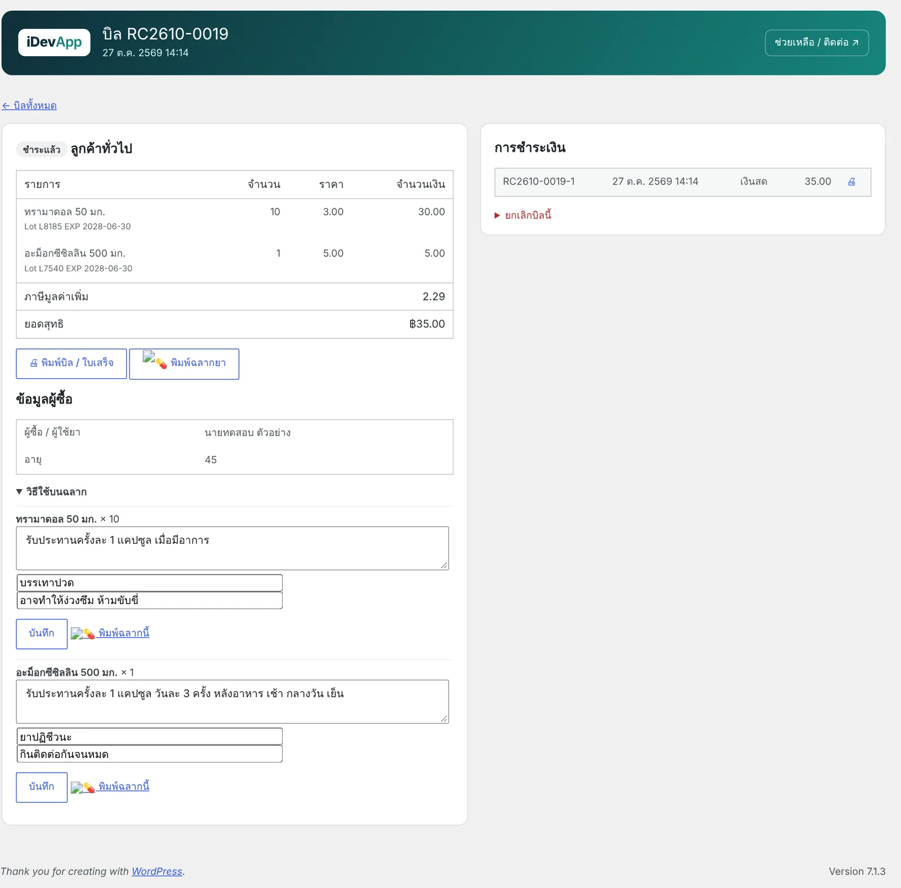
หน้าบิล: ข้อมูลผู้ซื้อ แก้วิธีใช้และพิมพ์ฉลากซ้ำทีละรายการ - บัญชี ขย.
ร้าน › รายงาน › บัญชี ขย. เลือกเล่มและช่วงวันที่ ดูบนจอ พิมพ์ A4 แนวนอน ตามหัวคอลัมน์ของแบบฟอร์ม หรือดาวน์โหลด CSV เภสัชกรลงลายมือชื่อในช่องที่เว้นไว้
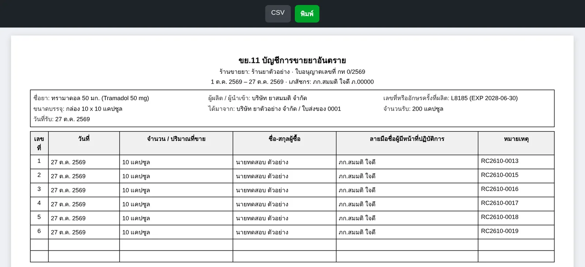
ขย.11 แยกแผ่นตามยาและ Lot 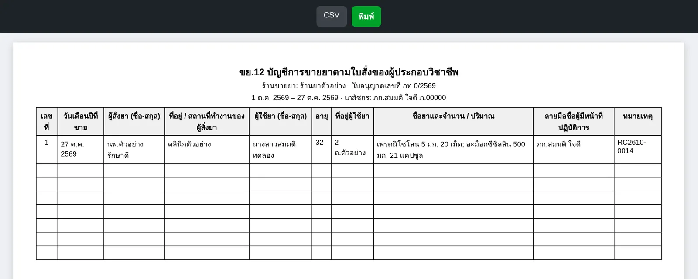
ขย.12 การขายตามใบสั่งยา 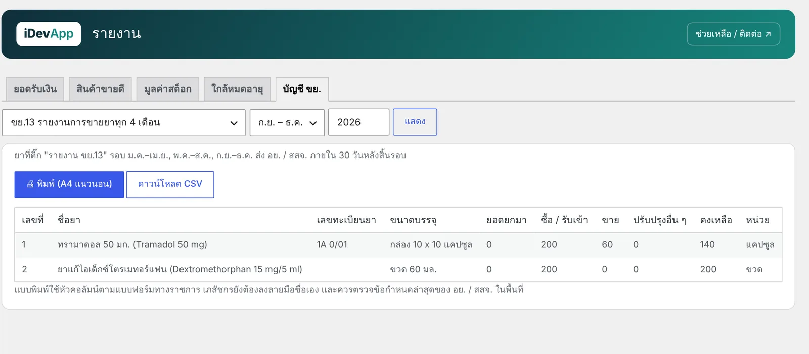
ขย.13 รายงานทุก 4 เดือน
ใส่ เภสัชกรผู้มีหน้าที่ปฏิบัติการ เลขที่ใบอนุญาต และ เลขที่ใบอนุญาตขายยา ที่ ร้าน › ตั้งค่า ส่วนขนาดฉลากอยู่ที่แท็บ การพิมพ์ · ฉลากยาใช้ได้ทั้ง I-Clinic และ I-Drug ส่วน บัญชี ขย.9–13 อยู่ใน I-Drug (ช่วงทดลองใช้ได้ครบ) · ตรวจรูปแบบที่ สสจ. ในพื้นที่กำหนดอีกครั้งก่อนใช้งานจริง
6งานประจำวันและรายงาน
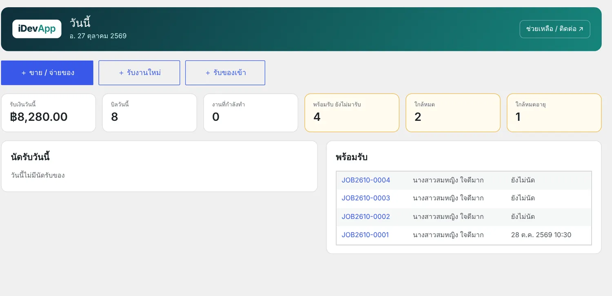
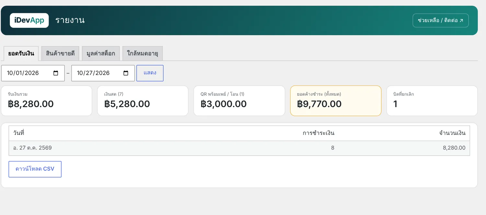
- บิล: ดูย้อนหลัง รับชำระส่วนที่ค้าง พิมพ์ซ้ำ และยกเลิกบิล (ผู้จัดการ) ซึ่งคืนสินค้าเข้า Lot เดิม
- ลูกค้า: ประวัติงานพร้อมค่าสายตาทุกครั้ง และบิลทั้งหมด
- สต็อก: ทุกการเปลี่ยนแปลงบันทึกในสมุดความเคลื่อนไหวพร้อมยอดคงเหลือ แก้ย้อนหลังไม่ได้
7บล็อกและ Shortcode
| Shortcode | ใช้ทำอะไร |
|---|---|
[idev_job_status] | หน้าติดตามงานและนัดรับของ (บล็อก ติดตามงานสั่งทำ) ลูกค้าเปิดจาก QR หรือกรอกเลขที่งาน + เบอร์โทร 4 หลักท้าย |
สำหรับนักพัฒนา
| Hook | เมื่อไร |
|---|---|
idev_store_bill_created | บันทึกบิลใหม่ |
idev_store_bill_voided | ยกเลิกบิล |
idev_store_job_created | รับงานใหม่ |
idev_store_job_status | เปลี่ยนสถานะงาน ($id, $new, $old) |
8ปัญหาที่พบบ่อย
ขายไม่ได้ ขึ้น "ในสต็อกไม่พอ"
รับของเข้าก่อน หรือเปิด ขายเกินสต็อกได้ ในตั้งค่า (ยอดจะติดลบจนกว่าจะรับของเข้า) สินค้าที่ไม่ต้องตัดสต็อก ให้ตั้งเป็น บริการ / สั่งตามงาน
สแกน QR พร้อมเพย์แล้วธนาคารไม่รับ
ตรวจเลขพร้อมเพย์ในตั้งค่า (เบอร์ 10 หลัก หรือเลข 13 หลัก) แล้วใช้ QR ทดสอบ 1 บาทในหน้าตั้งค่า ระบบไม่ได้ตรวจยอดเข้าบัญชีอัตโนมัติ เจ้าหน้าที่ต้องดูยอดในแอปธนาคารก่อนกดบันทึก
พิมพ์ดอทเมทริกซ์แล้วตัวหนังสือเลื่อนหรือขึ้นหน้าใหม่
ตั้งขนาดกระดาษในไดรเวอร์ (Printing Preferences → Paper Size → Custom) ให้ตรงกับที่ตั้งในปลั๊กอิน และตั้ง Margins เป็น None/Minimum ในหน้าต่างพิมพ์ของเบราว์เซอร์